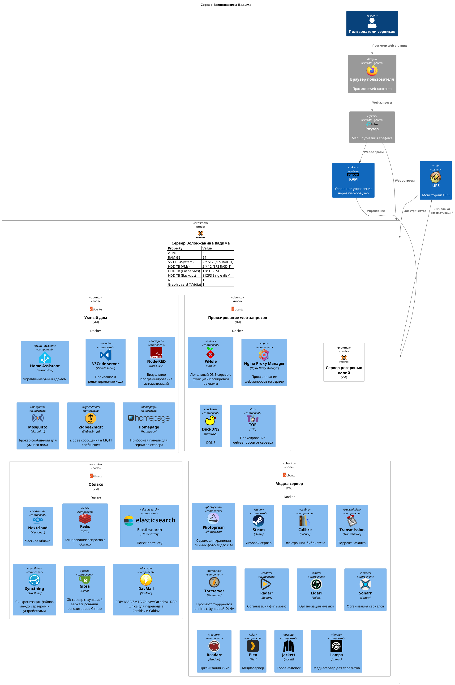

Сервер Волокжанина Вадима

Установка Docker
# Install packages for work with net
sudo apt install net-tools
sudo apt-get -y install apt-transport-https ca-certificates curl software-properties-common
# Install Docker
curl -fsSL https://download.docker.com/linux/ubuntu/gpg | sudo apt-key add -
sudo apt-key fingerprint 0EBFCD88
sudo add-apt-repository "deb [arch=arm64] https://download.docker.com/linux/ubuntu $(lsb_release -cs) stable"
sudo apt-get update
apt-cache policy docker-ce
sudo apt-get -y install docker-ce
# Add user in docker group, that do not launch docker with sudo
sudo groupadd docker
newgrp docker
sudo usermod -aG docker $USER
# Install docker-compose
sudo curl -L "https://github.com/docker/compose/releases/latest/download/docker-compose-$(uname -s)-$(uname -m)" -o /usr/local/bin/docker-compose
sudo chmod +x /usr/local/bin/docker-compose
sudo ln -s /usr/local/bin/docker-compose /usr/bin/docker-compose
Работа с репозиторием
# For clone with submodules
git clone --recurse-submodules git@github.com:VolokzhaninVadim/server
# Add submodule
git submodule add git@<repo>
# Remove submodule
git rm -rf --cached <submodule path>
# Update submodules
git pull --recurse-submodules
# Move submodule
git mv old/submodule new/submodule
Создано Sphinx